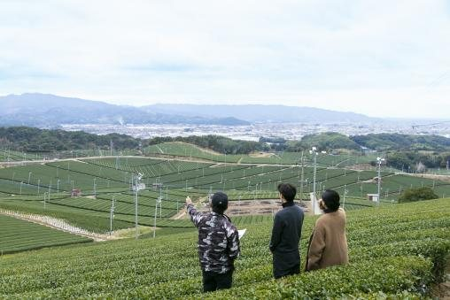
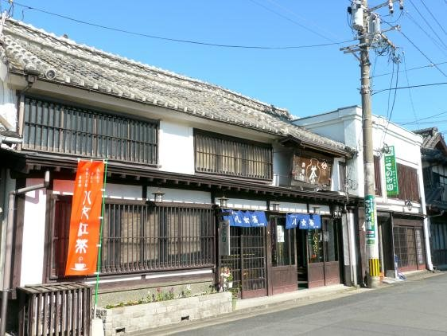
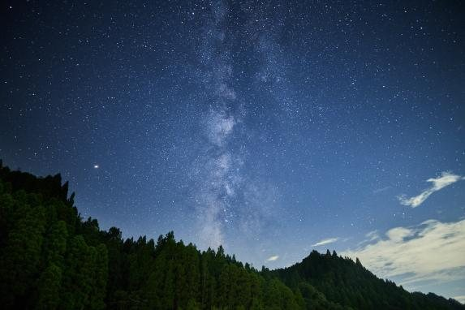
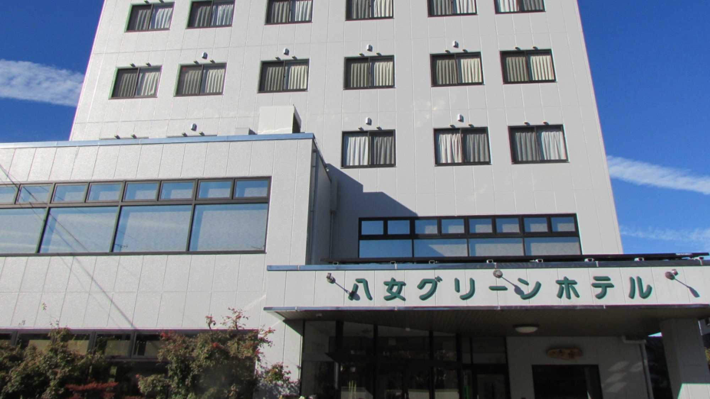
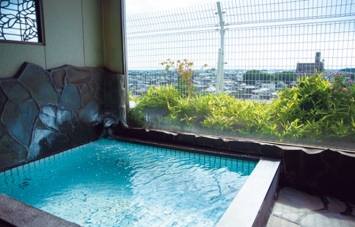
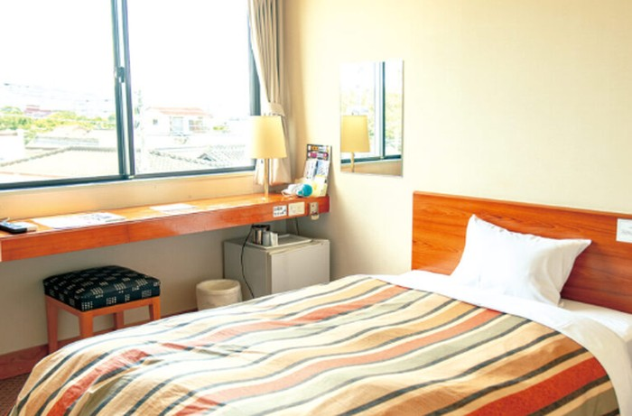
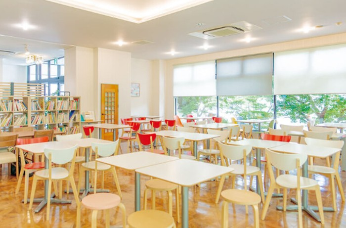

Matcha and artisan heritage. Yame is one of the world's most respected matcha-growing regions, and right now it's figuring out what comes next. Join the Matcha-thon, set up at a renovated old schoolhouse, and add your voice to where a centuries-old craft goes from here.
Yame's program is built around the crafts that still run this town — tea fields, indigo and textile studios, a sake brewery that's been going for generations, and satoyama terraces people still work by hand. Mornings you get to pick what you try; the rest of the day, the town does the rest.



Yame Green Hotel sits right in the middle of the old post town, where white-walled streets are still lined with craft shops, small museums, restaurants, and general stores.

The single rooms are simple and comfortable, each with a desk built into the wall — nothing fancy, but everything you'll actually use after a day out in the tea fields. And since the hotel sits inside the old post town, the streets, craft shops and restaurants you'll want to explore are about two minutes on foot.


